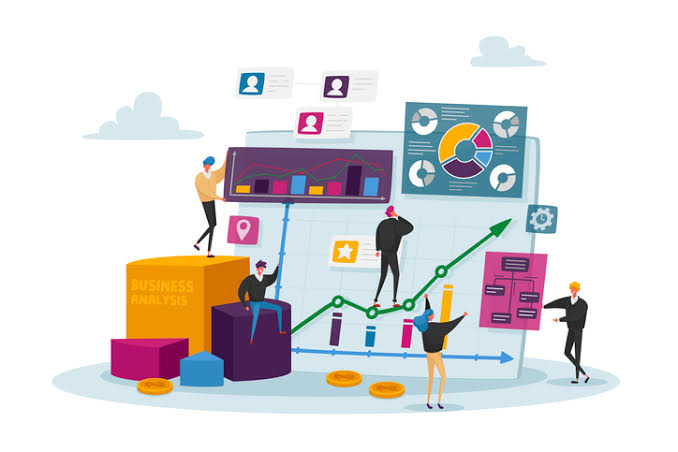

Business management equips people with the skills to organize people, resources, and ideas to achieve success in any organization.
Introduction to Business Management
Business management is the process of planning, organizing, leading, and controlling resources in order to achieve business goals. It involves making decisions that guide the direction of a company and ensuring that all departments work together effectively. A business manager is responsible for coordinating people, money, technology, and materials so that the organization can succeed in a competitive environment.
Good management helps a business operate smoothly, meet customer needs, maximize profits, and build long-term sustainability. It is essential in every type of organization, including small firms, multinational companies, schools, hospitals, and government institutions. Business management combines practical action with strategic thinking and problem solving.
Business management turns ideas, people, and resources into organized action for achieving goals.
Management Principles
Management principles are the basic rules and guidelines that help managers do their work efficiently. These principles include planning, organizing, leading, and controlling. They provide a framework for decision-making and daily operations. When applied properly, they ensure that business activities are carried out in a systematic and coordinated way.
Managers use these principles to balance short-term needs with long-term goals. They help build order, reduce confusion, and support accountability. In modern business, managers also rely on communication, teamwork, and technology to apply these principles effectively.

Management principles create order and direction in the way organizations operate.
Planning
Planning is the process of deciding in advance what should be done, how it should be done, when it should be done, and who should do it. It is the first function of management and forms the foundation for all other activities. Planning helps the organization set goals, allocate resources, and anticipate future challenges. It may involve budgets, schedules, policies, strategies, and action plans.
Good planning reduces uncertainty and improves coordination. It ensures that activities are directed toward the achievement of specific objectives. Even though plans may need adjustment later, planning helps businesses act with purpose and foresight.
Planning gives direction and helps managers prepare for the future with clarity.
Organizing
Organizing is the process of arranging resources and activities so that work can be done efficiently. It includes defining roles, grouping tasks, assigning authority, and creating a structure for communication and coordination. Through organizing, managers establish relationships between people and departments so that the organization works as a unified system.
Effective organizing improves productivity because work is distributed according to skills and responsibility. It also helps avoid duplication and confusion. A good organizational structure allows the business to respond quickly to opportunities and problems.
Organizing brings structure to work so that people and resources can function smoothly.
Leading
Leading involves influencing, motivating, and guiding employees toward the achievement of organizational objectives. A leader communicates the vision of the organization, sets expectations, resolves conflicts, and encourages teamwork. Leadership is not only about giving orders; it also involves listening, coaching, and inspiring others.
Successful leaders build trust and create a positive work culture. They help employees understand their responsibilities and support them in performing at their best. Leadership is essential for morale, commitment, and organizational growth.
Leading inspires people to work together toward a common purpose.
Controlling
Controlling is the process of monitoring performance, comparing it with plans, and taking corrective action when needed. It ensures that activities are progressing as expected and that goals are being achieved. Controlling involves setting standards, measuring results, analyzing deviations, and implementing feedback.
Without control, businesses can lose direction, waste resources, and miss targets. Effective control helps managers identify problems early and maintain quality, efficiency, and accountability.
Controlling keeps the organization aligned with its goals and standards.
Business Functions
Every business has several key functions that must work together for success. These include marketing, finance, production, and human resource management. Each function contributes in a different way to the achievement of business goals. A business cannot perform well if one function is weak or disconnected from the others.
Coordination between these functions is vital to ensure that the company produces the right products, offers them at the right price, attracts customers, and manages its workforce effectively. Good business management requires integration across all departments.
Business functions must work together to create value for customers and the organization.
Marketing
Marketing is the process of identifying customer needs and satisfying them profitably. It includes market research, product development, pricing, promotion, and distribution. Marketing helps businesses understand what customers want and how to communicate the value of their products or services.
Effective marketing increases sales, strengthens customer relationships, and improves the image of the business. It is a key driver of growth because it links the company with the market and the consumer.
Marketing connects the business with the needs and desires of customers.
Finance
Finance is concerned with the management of money in the organization. It includes planning for cash needs, raising funds, investing resources, and controlling financial performance. Financial management ensures that the business has enough funds to operate and grow without becoming financially unstable.
The finance function also supports planning by preparing budgets, analyzing returns, and monitoring costs. Sound financial management is essential for survival and expansion.
Finance ensures that resources are used wisely to support business growth.
Production
Production is the process of transforming raw materials into finished goods or services. It includes planning production, managing operations, controlling quality, and using resources efficiently. Production management is important because it affects cost, quality, speed, and customer satisfaction.
A business that manages production effectively can deliver products on time and at the required standard. This improves competitiveness and supports business reputation.
Production converts resources into valuable goods and services for customers.
Human resource management
Human resource management focuses on recruiting, training, motivating, and retaining employees. It is responsible for creating a productive work environment and ensuring that the organization has the right people for the right jobs. HRM also handles performance appraisal, compensation, and workplace relations.
People are one of the most valuable assets of any business. Good human resource management improves morale, reduces turnover, and increases efficiency.
Human resource management develops and supports the people who drive the business.
Decision Making and Strategy
Decision-making is the core activity of management. Managers constantly make choices about products, markets, pricing, staffing, technology, and growth. Strategic decisions shape the long-term direction of the organization, while operational decisions guide day-to-day activities.
Good decision-making requires accurate information, clear objectives, and thoughtful analysis. Managers use tools and models to evaluate options and choose the best course of action.
Decision making links analysis, judgment, and action in the management process.
SWOT analysis
SWOT analysis is a planning tool used to identify strengths, weaknesses, opportunities, and threats. It helps managers understand both the internal and external factors that affect the business. Strengths and weaknesses are internal, while opportunities and threats are external.
By analyzing these factors, businesses can make better strategic choices and build competitive advantage. SWOT analysis is commonly used when developing new strategies or reviewing existing ones.
SWOT analysis helps managers evaluate the business environment and future possibilities.
Goal setting
Goal setting means defining clear and measurable objectives for the organization and its employees. Goals provide direction, motivate effort, and help evaluate performance. They should be realistic, specific, and time-bound. A business that sets strong goals is more likely to focus resources on meaningful outcomes.
Managers often use goals to align the efforts of departments and individuals. This improves coordination and ensures that everyone is working toward the same outcomes.
Goal setting turns broad ambitions into clear targets that can be achieved.
Leadership styles
Leadership style refers to the way a manager directs and influences employees. Common styles include autocratic, democratic, laissez-faire, and transformational leadership. Each style has advantages and disadvantages depending on the situation, the type of work, and the people involved.
The best leaders adapt their style to the needs of the team and organization. A flexible leadership approach often produces the best results because different situations require different levels of direction and support.
Leadership style affects motivation, teamwork, and the performance of the organization.
Communication
Communication is the process of exchanging information clearly and effectively. It is essential in management because misunderstandings can cause delays, conflict, and poor decisions. Managers communicate with employees, customers, suppliers, and shareholders. Good communication improves coordination and strengthens relationships.
Communication can be verbal, written, or non-verbal. In modern business, digital communication tools also play a major role in keeping teams connected.
Communication is the channel through which plans, expectations, and feedback flow.
Performance and Growth
Business performance measures how well an organization achieves its objectives. It can be assessed through sales, profit, customer satisfaction, productivity, market share, and employee engagement. Growth refers to the ability of a business to expand its operations, improve its market position, and create more value over time.
Sustainable growth requires strong leadership, sound strategy, efficient operations, and financial discipline. Managers must continuously evaluate performance and improve processes to remain competitive.
Performance and growth show whether the business is moving forward successfully.
Productivity
Productivity measures the efficiency with which inputs are converted into outputs. A productive organization uses its resources well and produces more value from the same effort. It can be improved through better systems, training, technology, and employee motivation.
Productivity shows how effectively resources are being used to create value.
Profitability
Profitability is the ability of a business to earn more than it spends. It is one of the clearest indicators of business success. Profitability can be measured through profit margin, return on investment, and net profit. A profitable business can invest in growth, reward owners, and withstand economic shocks.
Profitability shows whether the business is generating value for its owners and stakeholders.
Innovation
Innovation is the introduction of new ideas, products, services, or processes that improve business performance. It helps companies stay competitive and respond to changing customer expectations. Innovation can be technical, managerial, or operational.
Modern businesses survive by adapting, experimenting, and improving. Innovation encourages creativity, flexibility, and long-term growth.
Innovation keeps the organization relevant and competitive in a changing world.
Risk management
Risk management is the process of identifying, analyzing, and responding to possible threats that could affect the organization. Risks may come from finance, operations, technology, competition, or the external environment. Effective risk management reduces uncertainty and protects the business from avoidable harm.
Businesses use risk control measures, insurance, contingency planning, and monitoring systems to manage risk. A strong risk management approach supports continuity and confidence.
Risk management helps the business prepare for uncertainty and protect its future.